1,048,576 input tokens
Google DeepMind · Gemini · 2026-08 · 主干正代
Gemini 3.7 Flash
当前 Flash 正代，强化 coding、agentic workflow 与可靠多步执行。

65,536 max output tokens
text / image / video / audio / PDF input
编辑判断
3.7 Flash 应作为当前默认可见叶子；向右滑动才回溯 3.6、3.5 与更早模型。
证据边界
API 模型页足以做接口级深读；仍无参数、数据配比和完整训练消融。